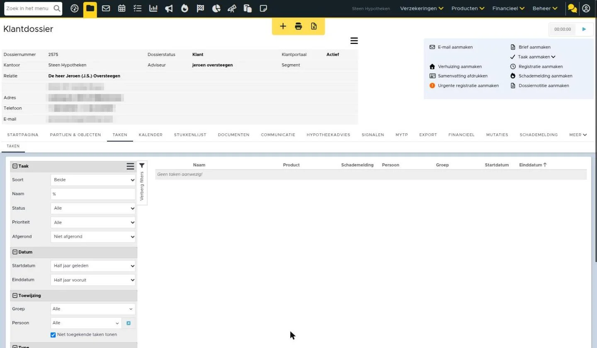
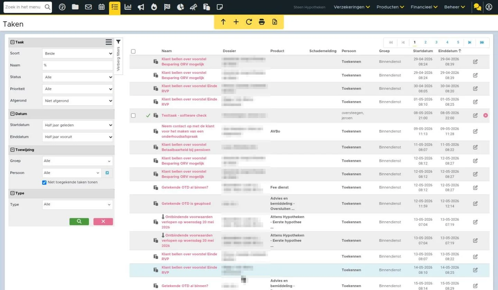

Taak aanmaken
Beschikbaar in: eBlinqx Compleet, Verzekering Provinciaal, Hypotheek Totaal
Met taken weet je welke acties jij nog moet ondernemen én maak je nieuwe acties aan. Deze taken komen op verschillende plaatsen in eBlinqx terug. Een taak kan bijvoorbeeld aan een dossier hangen, aan een product, aan een schademelding, of hier geheel los van staan. Ook van een e-mail kan een taak gemaakt worden.
Doordat op verschillende plaatsen taken aangemaakt kunnen worden, zijn er ook verschillende manieren waarop je een taak kan aanmaken en gebruiken. In dit artikel leggen we dat uit.
Takenoverzicht
Bij de start van je werkdag, ga je naar het takenoverzicht in je menubalk. In je overzicht kun je filteren op welke taken je wilt zien. Klik op het zoek-icoon om de zoek filters toe te passen. Je hebt nu een takenlijst met de gewenste zoekfilters.

Taak aanmaken vanuit takenoverzicht
Klik op het ➕-teken linksboven om een taak aan te maken. Allereerst geef je aan of de taak voor een persoon of groep is.
Let op: het is niet mogelijk om een agenda afspraak als groepstaak aan te maken. Bij een afspraak met meerdere personen, maak je eerst een persoonlijke taak aan en nodig je vervolgens de andere personen uit.

Persoonlijke taak
Een persoonlijke taak komt op één persoon te staan. Dit kan jijzelf of een collega van jou zijn. De persoon die je selecteert bij ‘verantwoordelijke persoon’ is de persoon op wiens naam de taak komt te staan.
Groepstaak
Een groepstaak wordt aangemaakt voor een workflowgroep. Alle personen die in deze workflowgroep zitten, kunnen de taak zien en toekennen. Het is de bedoeling dat één van de groepsleden de taak op zicht neemt door op “toekennen” te klikken. Bij het aanmaken van een groepstaak kan je ook direct de taak op een persoon uit de workflowgroep zetten door deze te kiezen bij ‘verantwoordelijke persoon’.
Wil je een workflowgroep toevoegen? Stuur dan een mail naar support-eblinqx@blinqx.tech en vermeld hierbij welke groep je wilt aanmaken en welke personen hierin moeten komen.
Afspraak aanmaken
Er zijn meerdere type taken aan te maken: afspraak, bellen, actie, klacht, schade, doel en bezichtiging. De mogelijkheden binnen een taak zijn afhankelijk van het type taak die je selecteert.
Deelnemers uitnodigen
Bij het type afspraak is het mogelijk om adresgegevens op te voeren. Deze afspraak staat gelijk in jouw agenda. Als je een afspraak wilt maken met meerdere personen, maak je eerst een persoonlijke taak aan. Vervolgens selecteer je bij ‘Genodigden’ de andere deelnemers en klik je op ‘selectie uitnodigen’.

Uitnodigen met e-mail
Het is mogelijk om naar de genodigden een e-mail te verzenden. Dit doe je door bij “E-mail verzenden” een vinkje te zetten. Na opslaan verschijnt er een tekstveld om de uitnodiging toe te lichten en staat de e-mailadressen vermeld. Zodra je de afspraak nogmaals opslaat wordt de uitnodigingse-mail verzonden..

Online afspraak link toevoegen
Wanneer de verantwoordelijke persoon in de taak gebruik maakt van Outlook en de synchronisatie met Office 365 kalender staat ingesteld dan is het mogelijk om direct vanuit de afspraak een link voor de afspraak online te genereren. Bij het maken van de afspraak komt dan de optie ‘Online afspraak link toevoegen’ zichtbaar. Deze kan je aanvinken. Na opslaan komt de link te staan in het veld ‘Omschrijving’ en in het veld ‘Locatie’. De link kan je kopiëren en plakken in de e-mail die je vanuit de afspraak verzendt naar de genodigden. Ook is de link op te halen door middel van de tag [taak->locatie]. Na het verzenden van de e-mail kan je, bij een online afspraak, niet meer de verantwoordelijke van de taak te wijzigen.


Categorie aanvinken
Aan bepaalde type taken kunnen taakcategorieën gekoppeld zijn, bijvoorbeeld ‘Notificatie eigenaar’. Deze categorie kan je aanvinken.

Aan de categorie is een kleur gekoppeld die zichtbaar wordt in de afspraak.

Daarnaast kan het zijn dat er acties gekoppeld zijn aan deze categorie, bijvoorbeeld van het versturen van een e-mail naar de taakverantwoordelijke (notificatie eigenaar). Om deze acties uit te voeren moet de workflow correct ingeregeld staan.
Taak laten herhalen
Je kunt een herhalende taak aanmaken, zodat deze automatisch meerdere keren in de agenda staat. Bijvoorbeeld iedere week. Hiervoor zet je rechts bij herhaling een vinkje. Er kan nu een taak aangemaakt worden die met een bepaalde regelmaat terugkomt.
Let op dat je hier een redelijke periode aangeeft. Een herhaling voor 5 jaar is vaak niet nodig. Hoe groter de periode die je hier aangeeft, hoe langer het duurt voordat de taak verwerkt is.

Taak aanmaken vanuit een dossier
Als je wilt dat een taak direct gekoppeld is aan een specifieke klant, product of schademelding, dan maak je een taak uit vanuit het klantdossier.
Je kunt dit op verschillende manieren doen. Links bovenaan vind je de knop ‘Snelkoppelingen’. Hier kan direct een persoonlijke taak of groepstaak aangemaakt worden.

Via het tabblad ‘Taken’ in een dossier kan je ook een taak aanmaken voor een persoon of workflowgroep. Wanneer je op het ➕-icoon klikt, wordt de dossierinformatie automatisch ingevuld. Er is nu een extra veld beschikbaar om de taak te koppelen aan een product. Vervolgens is het aanmaken van de taak hetzelfde als hierboven beschreven.

Taak koppelen aan product of polisdeel
ℹ️ Koppelen aan een polis is alleen mogelijk als je werkt met mutatievoorstellen.
Om duidelijk vast te leggen welke openstaande taken er zijn voor een product of polis, zoals een autoverzekering, koppel je een taak aan het bijbehorende product of polis. Ook is het mogelijk om de taak via Product aan een schademelding te koppelen. De beschikbare polissen worden getoond zodra je een een product kiest waaronder meerdere polissen zitten. Als schadedatum, schadenummer, schadenummer extern of object niet is ingevuld, wordt de schademelding niet getoond.

Taak aanmaken vanuit een e-mail
Vanuit de e-mail kan je direct een taak aanmaken via dit symbool:

Je geeft aan of het een persoonlijke of groepstaak betreft. Dan krijg je het volgende scherm te zien:

Wanneer je de bijlagen onder E-mail bijlagen aanvinkt dan zijn deze terug te vinden onder en in de taak. Ook worden de documenten automatisch toegevoegd onder het tabblad Documenten in het dossier. Wil je de bijlagen gekoppeld aan de taak verwijderen dan ga je naar het takenoverzicht en klik je op het plusje voor de taak. Hier staat achter de bijlage een kruisje, waarmee je de gekoppelde bijlage kunt verwijderen.

Indien er afbeeldingen in de e-mail staan (niet als bijlage, maar echt in de tekst zelf) dan krijg je de vraag of de afbeeldingen uit de omschrijving als bijlage onder de taak opgeslagen moeten worden. Kies je hiervoor voor ‘Nee’ dan worden de plaatjes uit de omschrijving taak gefilterd. In de originele e-mail blijven deze gewoon staan. Kies je hier voor ‘Ja’ dan worden de plaatjes als bestand opgeslagen onder de taak en deze blijven zichtbaar in de taakomschrijving.

Wanneer je de taak opent (via het dossier of het takenoverzicht) dan zie je via het tabblad E-mail de e-mail terug vanuit waar de taak is aangemaakt. Vanaf dit tabblad kan je de e-mail verder afhandelen.

Taak aanmaken voor een collega
Het is ook mogelijk om een taak aan te maken voor een collega. Om dit te doen maak je taak aan en bij ‘Verantwoordelijke persoon’ selecteer je jouw collega.

Let op: om een persoon bij ‘Verantwoordelijke persoon’ te kunnen selecteren, moet deze persoon in het takenfilter onder ‘Persoon’ toegevoegd zijn. Anders is deze hier niet zichtbaar. Om een persoon toe te voegen ga je naar de module Taken. Hier klik je op het blauwe pijltje in het veld Persoon.

Vervolgens zoek je de betreffende persoon op en klik je op de naam op deze toe te voegen.

Taken verantwoordelijke beheer
Het toevoegen van een persoon bij het veld ‘Persoon’ in het takenfilter is ook mogelijk Taken verantwoordelijke beheer. Deze kan je bereiken vanuit het Takenoverzicht – hamburgermenu – Taak verantwoordelijke beheer.

Daarnaast kan je hier een persoon uit de lijst verwijderen. Het toevoegen doe je middels het ➕-icoon en het verwijderen door middel van het rode kruisje achter de betreffende persoon. Indien je de juiste rechten hebt, kun je hier ook voor andere gebruikers personen toevoegen en/of verwijderen.

Automatisch taken aanmaken
Met een takenworkflow zijn veel taken te automatiseren. Zo kan een workflow reageren op verschillende typen en categorieën van een taak. Ook kan automatisch een afspraakbevestiging gestuurd worden na het aanmaken van een afspraak. Een medewerker van Blinqx moet dit voor je inrichten. Neem contact met ons op voor meer informatie of opdracht tot inrichting.
Zo ziet het er nu uit in eBlinqx Connect


Afbeeldingen bij dit artikel